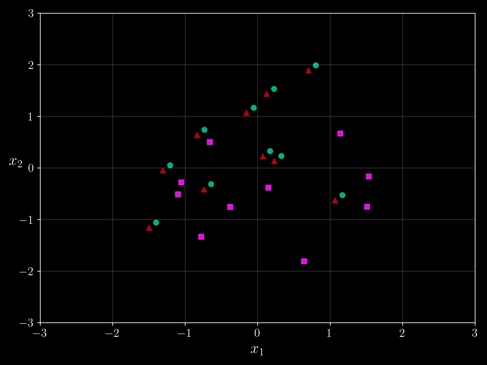
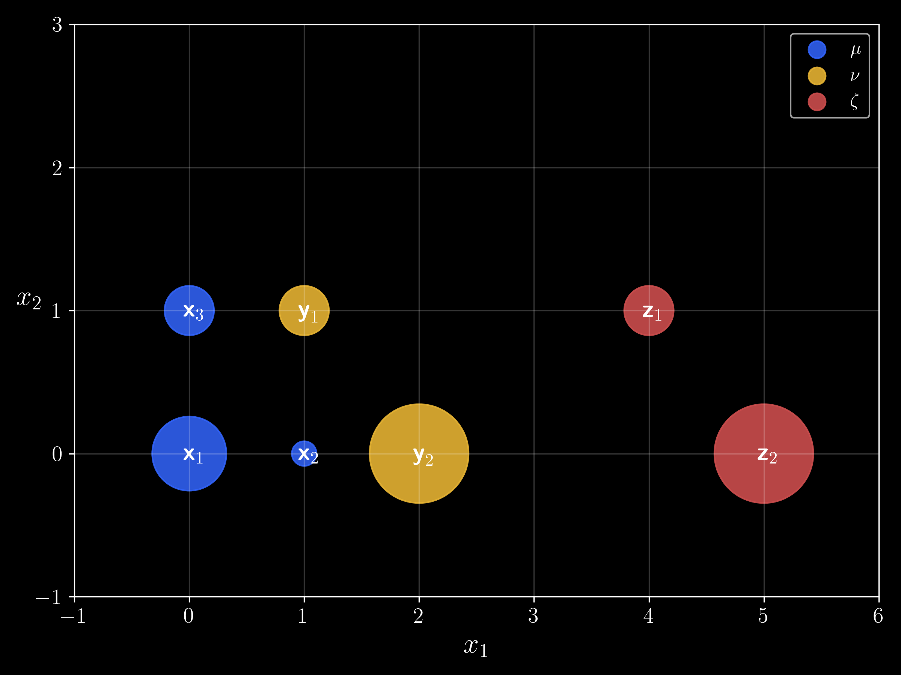
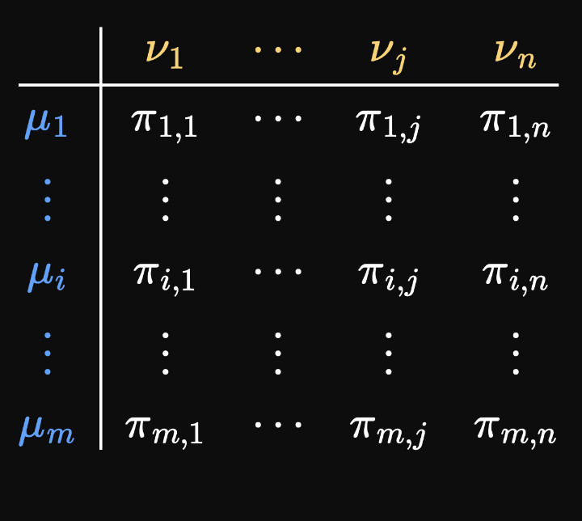
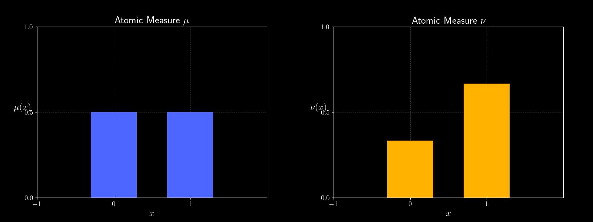
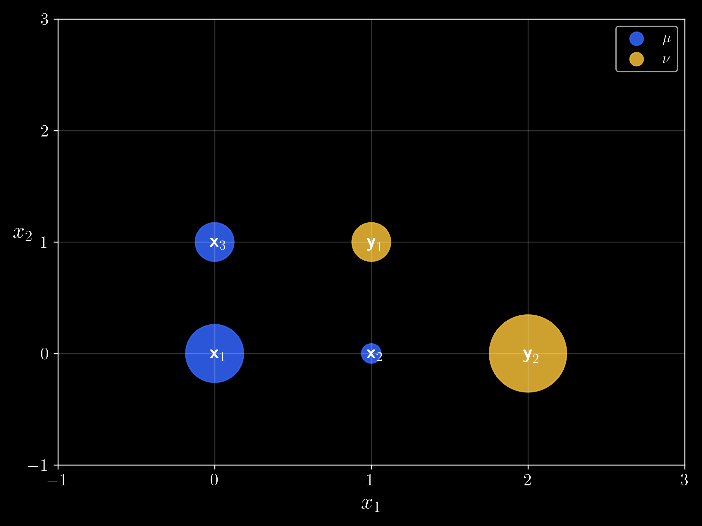
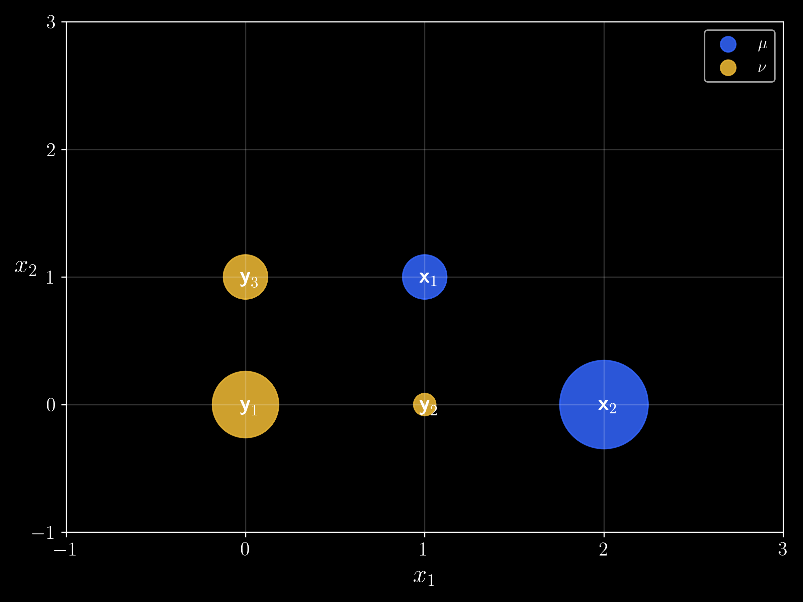
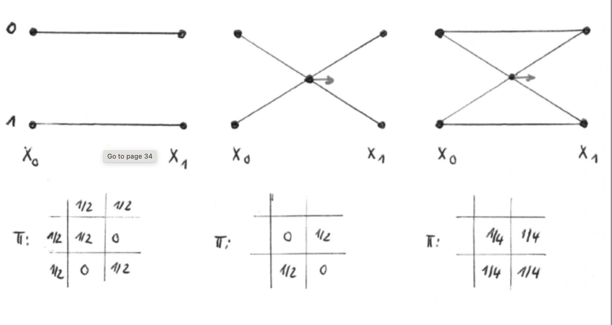

(Optimal) Coupliing of measures
Hannah Louisa Boldt h.boldt@campus.tu-berlin.de
June 4th 2026, TU Berlin
Contents
- Recap: Total Variation Norm
- Probability Measures and examples
- Push-forward measures and laws of random variables
- Wasserstein distance and optimal couplings
- Couplings from maps and Brenier's theorem
- Distance between Gaussian measures
- Summary and outlook
Recap: Total Variation Norm
Recap: Total Variation Norm

Is the triangle measure or the square measure nearer to dot measure?
TV of Probability measures is always 2, but intuitively the cross measure should be closer to the dot measure. (check on board)
Recap: TV Norm and test functions
- Probability measures \((\mu_n)_n\) do in general not weak-* converge to a probability measure. Example: \(\mu_n = \delta_n\) converges weak-* to \(\mu \equiv 0\).
- Probability measures \((\mu_n)_n\) converge narrowly to a (probability) measure \(\mu\) if $$ \lim_{n \to \infty} \int \varphi \, d\mu_n = \int \varphi \, d\mu \quad \text{for all } \varphi \in C_b(\mathbb{R}^d) $$
- TV-distance \(\|\mu-\nu\|\) between \(\mu,\nu \in \mathcal{P}(\mathbb{R}^d)\) with disjoint support is always \(2\), so we need another distance.
Recap: Push-Forward Measures
Examples: Probability Measures
The space \(\mathcal{P}(\mathbb{R}^d)\) is convex but not linear.
is again a probability measure.
Probability measures can be visualized through samples or realizations.
Examples:
-
Dirac measures \(\delta_x\), \(x \in \mathbb{R}^d\)
\[ \delta_x(\{x\})=1,\qquad \delta_x(\mathbb{R}^d\setminus\{x\})=0 \]
- Convex combinations of Dirac measures (Atomic Measures)
-
Gaussian measures
\[ \mu(A) := \int_A \frac{1}{(2\pi\sigma^2)^{d/2}} e^{-\frac{|x|^2}{2\sigma^2}} \,dx \]
Sample of Gaussian distribution


Plot below shows 3 datapoints sampled from the distribution
Sample of 2D Gaussian distribution
TV distance between Atomic measures
TV norm between two Atomic measures $\mu$ and $\nu$ is always 2 Let $\delta_x, x \in \mathbb{R}^d$ be defined by $$ \delta_x(A):= \begin{cases}1 & \text { if } x \in A, \\ 0 & \text { otherwise },\end{cases} $$ and $$ \mu:=\sum_{k=1}^n \mu_k \delta_{x_k}, \quad \mu_k \in \mathbb{R} $$ Then $$ \|\mu\|_{T V}=\sum_{k=1}^n\left|\mu_k\right|, \quad|\mu|(A)=\sum_{k=1}^n\left|\mu_k\right| \delta_{x_k}(A) $$ For probability measures $\mu$ with $\sum_{k=1}^n \mu_k=1$ and $\mu_k \geq 0$ and $\nu:=\sum_{j=1}^m \nu_j \delta_{y_j}, x_k \neq y_j$, we get $$ \|\mu-\nu\|_{T V}=\sum_{k=1}^n\left|\mu_k\right|+\sum_{j=1}^m\left|\nu_j\right|=2 $$
Example 1
Given the combination of diracs:
$x_1 = (0,0), x_2 = (1,0), x_3 = (0,1)$
$y_1 = (1,1), y_2 = (2,0)$
$z_1 = (4,0), z_2 = (5,1)$
$\mu=\frac{1}{6}\left(3\delta_{x_1}+1\delta_{x_2}+2\delta_{x_3}\right)$
$\nu=\frac{1}{6}\left(2\delta_{y_1}+4\delta_{y_2}\right)$
$\zeta=\frac{1}{6}\left(2\delta_{z_1}+4\delta_{z_2}\right)$

Discrete measures $\mu,\nu$ and $\zeta$ with support points $x_i,y_j$ and $z_k$. The bigger the dot, the bigger the weight at the point.
TV-distance between all of them is 2, since their supports are disjoint.
Wasserstein Distance
$\displaystyle W_2^2(\mu, \nu):=$ $\displaystyle \min _{\pi \in \Pi(\mu, \nu )}$ $\displaystyle \int_{\mathbb{R}^d \times \mathbb{R}^d}\|x-y\|_2^2 \mathrm{~d} \pi(x, y) $
$\mathcal{P}_2\left(\mathbb{R}^d\right)$ becomes a complete metric space, where $\pi \in \mathcal{P}\left(\mathbb{R}^d \times \mathbb{R}^d\right)$ is a coupling from$$ \Pi(\mu, \nu):=\left\{\pi \in \mathcal{P}\left(\mathbb{R}^d \times \mathbb{R}^d\right):\left(P_1\right)_{\#} \pi=\mu,\left(P_2\right)_{\#} \pi=\nu\right\} \quad \textbf{Couplings of $\mu$ and $\nu$} $$
where the projection is $P^1: \mathbb{R}^d \times \mathbb{R}^d \rightarrow \mathbb{R}^d, \quad P^1(x, y)=x$.Lets look at examples of couplings and then calculate their Wasserstein distance!
1. Independent couplings 2. Optimal couplings 3. Couplings from maps
Couplings of Atomic Measures
Given
$$ \mu=\sum_{i=1}^m \mu_i \delta_{x_i}, \quad \nu=\sum_{j=1}^n \nu_j \delta_{y_j}, \quad \mu_i, \nu_j \geq 0, \sum_{i=1}^m \mu_i=\sum_{j=1}^n \nu_j=1 $$
Couplings $\displaystyle \Pi(\mu, \nu): \pi=\sum_{i, j=1}^{m, n} \pi_{i j} \delta_{x_i, y_j}, \quad \pi_{i j} \geq 0$
Constraints
$$ \begin{aligned} & \sum_{j=1}^n \pi_{i j}=\mu_i,\quad i=1,\ldots,m \\ & \sum_{i=1}^m \pi_{i j}=\nu_j,\quad j=1,\ldots,n \end{aligned} $$
Wasserstein distance of atomic measures: Solution of a linear optimization problem $$ \begin{aligned} W_2(\mu, \nu) & =\min _{\pi \in \Pi(\mu, \nu)} \sum_{i, j=1}^{m, n} \pi_{i, j}\left\|x_i-y_j\right\|^2 \\ & =\min _\pi\langle c, \pi\rangle \text { s.t. } \pi 1_n=\mu, \pi^{\top} 1_m=\nu, \pi \geq 0 \end{aligned} $$

Coupling matrix $\pi \in \Pi(\mu,\nu)$
Coupling example
Give the Atomic measures on $\mathbb{R}$:
$x_1 = 0, x_2 = 1$
$y_1 = 0, y_2 = 1$
$\mu=\frac{1}{2} \delta_{x_1}+\frac{1}{2} \delta_{x_2}$
$\nu=\frac{1}{3} \delta_{y_1}+\frac{2}{3} \delta_{y_2}$

Example 1
We have two combinations of diracs:
$x_1 = (0,0), x_2 = (1,0), x_3 = (0,1)$
$y_1 = (1,1), y_2 = (2,0)$
$\mu=\frac{1}{6}\left(3\delta_{x_1}+1\delta_{x_2}+2\delta_{x_3}\right)$
$\nu=\frac{1}{6}\left(4\delta_{y_1}+2\delta_{y_2}\right)$
Optimal map: $T(x_1)=y_2,\; T(x_2)=y_2,\; T(x_3)=y_1$

Example 2
We have two combinations of diracs:
$x_1=(0,0),\; x_2=(1,0),\; x_3=(0,1)$
$y_1=(1,1),\; y_2=(2,0)$
$\mu=3\delta_{x_1}+1\delta_{x_2}+2\delta_{x_3}$
$\nu=2\delta_{y_1}+4\delta_{y_2}$
Optimal map: $T(x_1)=y_2,\; T(x_2)=y_2,\; T(x_3)=y_1$

Example 3
We have two combinations of diracs:
$x_1=(1,1),\; x_2=(2,0)$
$y_1=(0,0),\; y_2=(1,0),\; y_3=(0,1)$
$\mu=2\delta_{x_1}+4\delta_{x_2}$
$\nu=3\delta_{y_1}+1\delta_{y_2}+2\delta_{y_3}$
Optimal map: does not exist.

Paths from couplings

Wow! We can construct paths between $\mu$ and $\nu$ from couplings!
Calculate Wasserstein Distance of Atomic Measures
We have two combinations of diracs. Find Minimizer of Wasserstein distance!
Calculate Wasserstein Distance of Atomic Measures
In this simple case a minimizer can be explicitly calculated.
Wasserstein distance: Solution of a linear optimization problem $$ \begin{aligned} W_2(\mu, \nu) & =\min _{\pi \in \Pi(\mu, \nu)} \sum_{i, j=1}^{m, n} \pi_{i, j}\left\|x_i-y_j\right\|^2 \\ & =\min _\pi\langle c, \pi\rangle \text { s.t. } \pi 1_n=\mu, \pi^{\top} 1_m=\nu, \pi \geq 0 \end{aligned} $$
Under certain conditions the optimal coupling is unique! (Brenier)
Couplings from Maps
Optimal couplings vs. optimal transport maps Example: $\mu=\frac{1}{2}\left(\delta_{-1}+\delta_1\right), \nu=\delta_0$ then the optimal coupling is not unique and can not be written as a map, since we have to split the mass of $\delta_0$ to transport it to $\delta_{-1}$ and $\delta_1$. todo check
Brenier's Theorem
- The optimal coupling $\pi$ is unique.
-
It can be written as
$\pi = (I, T)_{\# \mu}$, where $(I, T): \mathbb{R}^d \rightarrow \mathbb{R}^d \times \mathbb{R}^d$,
$x \mapsto (x, T(x))$
, with $T \in L_\mu^2(\mathbb{R}^d, \mathbb{R}^d)$ being the optimal transport map, i.e.
$$ W_2^2(\mu, \nu) = \int_{\mathbb{R}^d} \|x - T(x)\|^2 \, d\mu(x) \quad \text{subject to} \quad \nu = T_{\# \mu} $$ -
It holds
$$ T(x) = \nabla \psi(x) \quad \text{for } \mu\text{-a.e. } x, $$ for some lower semi-continuous, convex, differentiable function $\psi: \mathbb{R}^d \rightarrow \mathbb{R}^d$ (Brenier potential). -
Conversely, if $\psi$ is lower semi-continuous, convex and differentiable $\mu$-a.e., with
$\nabla \psi \in L_\mu^2(\mathbb{R}^d, \mathbb{R}^d)$, then
$$ T = \nabla \psi $$ is the optimal transport map from $\mu$ to $\nu = T_{\#}\mu \in \mathcal{P}_2(\mathbb{R}^d)$.
Wasserstein Distance of Gaussians
For two Gaussians $$ \mu=\mathcal{N}\left(m_\mu, \Sigma_\mu\right), \quad \nu=\mathcal{N}\left(m_\nu, \Sigma_\nu\right) $$ where $\mathcal{N}(m, \Sigma)$ has the density $$ p(x):=(2 \pi)^{-\frac{d}{2}}(\operatorname{det} \Sigma)^{-\frac{1}{2}} \mathrm{e}^{-\frac{1}{2}(x-m)^{\top} \Sigma^{-1}(x-m)}, $$ the optimal transport map is given by $$ \begin{gathered} T(x)=m_\nu+A\left(x-m_\mu\right), \quad A:=\Sigma_\mu^{-\frac{1}{2}}\left(\Sigma_\mu^{\frac{1}{2}} \Sigma_\nu \Sigma_\mu^{\frac{1}{2}}\right)^{\frac{1}{2}} \Sigma_\mu^{-\frac{1}{2}} \\ W_2^2(\mu, \nu)=\int\|x-T(x)\|^2 \mathrm{~d} x= \left\|m_\mu-m_\nu\right\|^2+\operatorname{Tr}\left(\Sigma_\mu+\Sigma_\nu-2\left(\Sigma_\nu^{\frac{1}{2}} \Sigma_\mu \Sigma_\nu^{\frac{1}{2}}\right)^{\frac{1}{2}}\right) \end{gathered} $$
Calculation of Optimal Transport Map on $\mathbb{R}$
TODO
Wasserstein Distance of Gaussians
Paths for $t \in[0,1]$ between $\mu=\mathcal{N}(0,1)\, dx$ and $\nu=\mathcal{N}(m,\sigma)\, dx$ :
- $\mu_t=(1-t) \mu+t \nu$, i.e. $p_t=(1-t) \mathcal{N}(0,1)+t \mathcal{N}(m, \sigma)$
- $X_t=(1-t) X_\mu+t X_\nu$, where $X_\mu \sim \mu, X_\nu \sim \nu, \mu_t \sim X_t$
Path example 1
$(1- t)\mu + t \nu$
Wasserstein Distance of Gaussians
Paths for $t \in[0,1]$ between $\mu=\mathcal{N}(0,1)\, dx$ and $\nu=\mathcal{N}(m,\sigma)\, dx$ :
- If $X_\mu, X_\nu$ independent, i.e. with joint distribution $\pi=\mu \otimes \nu$, we get by convolution $$ p_t=\int_{\mathbb{R}^d} p_\mu\left(\frac{1}{1-t} y\right) p_\nu\left(\frac{1}{t}(\cdot-y)\right) \mathrm{d} y=\mathcal{N}\left(t m,(1-t)^2+t^2 \sigma^2\right) $$
Wasserstein Distance of Gaussians
Paths for $t \in[0,1]$ between $\mu=\mathcal{N}(0,1)\, dx$ and $\nu=\mathcal{N}(m,\sigma)\, dx$ :
- If $\left(X_\mu, X_\nu\right) \sim \pi=(I, T)_{\sharp \mu}$ and $T_t: \mathbb{R}^d \rightarrow \mathbb{R}^d, T_t(x):=(1-t) x+t T(x)$ $$ e_t: \mathbb{R}^d \times \mathbb{R}^d \rightarrow \mathbb{R}^d, e_t(x, y):=(1-t) x+t y $$ Then $$ \mu_t=\left(T_t\right)_{\sharp} \mu=\left(e_t\right)_{\sharp} \pi $$ and if $\mu$ has density $p$ we know that $\mu_t$ has density $p_t=C p\left(T_t^{-1} \cdot\right)$. Thus, with the optimal transport map $T(x)=m+\sigma x$, we obtain $$ p_t=\mathcal{N}(t m, 1-t+t \sigma) $$
Interactive
$p_t=\mathcal{N}((1-t) \mu_1+ t \mu_2, (1-t) \sigma_1 +t \sigma_2)$
Calculation Optimal Transport Gaussian
TODO (If there is time left)
Outlook
Summary
Thank You for listening!
References